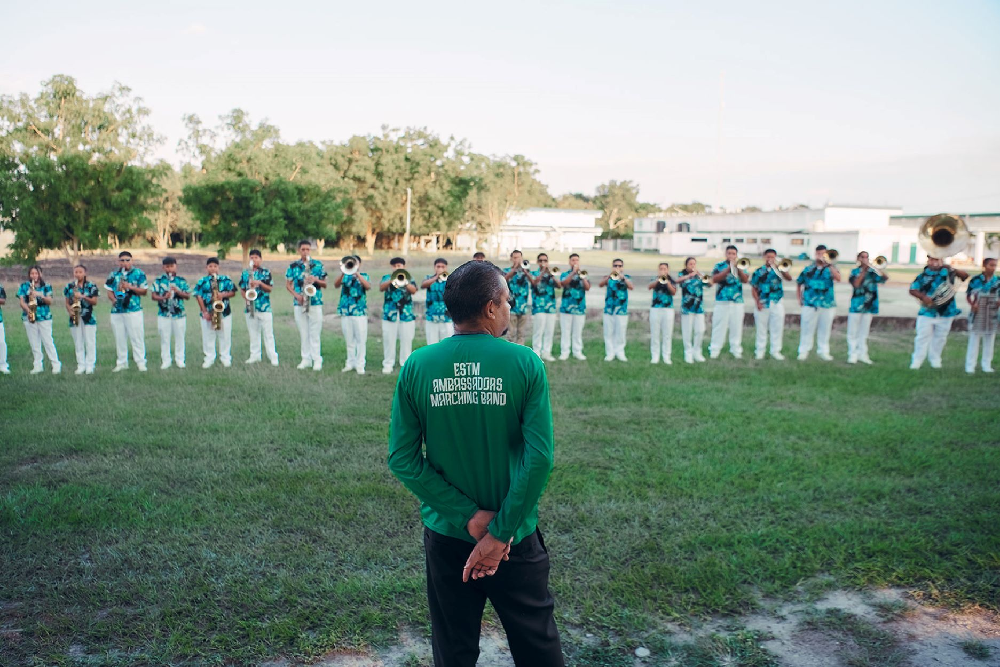
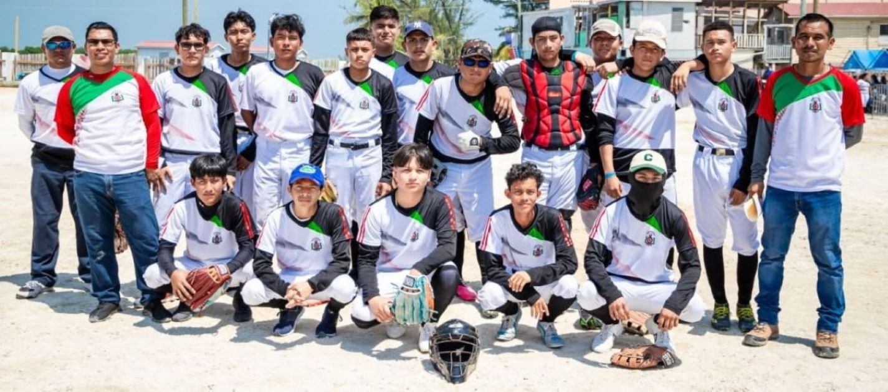

ESTM Ambassadors Marching Band
The ESTM Ambassadors Marching Band holds the title of Belize Bandfest 2023 Champions. This band is made up of dedicated students who represent ESTM with pride and joy. The band also performs at various events, so stay tuned for their upcoming shows.

ESTM Sports Teams
Energetic students at Escuela Secundaria Técnica México can join various sports teams, such as football, softball, and athletics, to showcase their skills. ESTM holds the National First Place title in both male and female football categories.

General School Activities
Escuela Secundaria Técnica México is committed to promoting a vibrant and interactive environment for students. Regular activities include: Sports Day, Casual Day, Crazy Socks Day, Lunch with Parents, Anniversaries, Competitions, and Awareness Days.